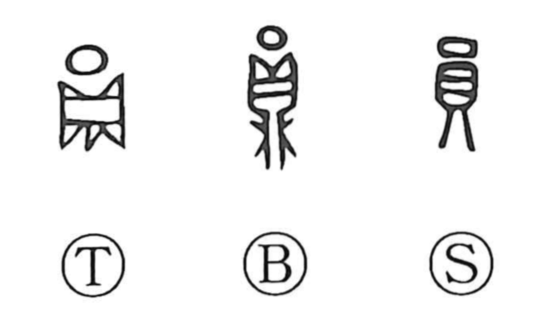

員

Kun: | On: in
member ・ number
Explanation
In its oldest form, the character shows a round ding, a ritual tripod cauldron, marked with a small circle to indicate its roundness; the element later written as 貝 is an abbreviated form of 鼎. When that whole figure was enclosed within a surrounding circle it produced 圓 (円), “round.” 員 itself was originally the mark used to count the number of such round tripods, hence the sense “number,” and by extension it came to denote those included in a tally—the “members” of a group.